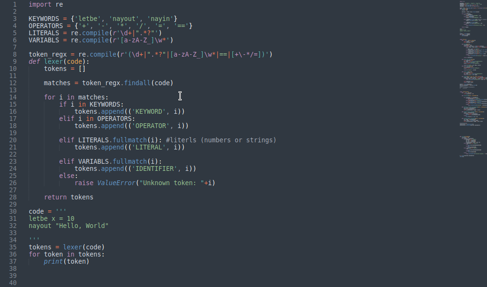

Nayion pt(1)
what's up, Naty here, and today, We’re building our own damn programming language Yeah, you heard me right. We're callin' it Nayion. This project is for learning purpose and gaining new understaning i started it with no clue and learnt a lot of new stuff so i decided it to blog it here. I ain't no pro, dont mind me if i do some wired stuff, just for learning right? ok lets start.
Intro to nayion design
The language is going to be interpreted not compiled means when we try to run it its gone execute code line by line with out creating separate executable, and its design we're gone keep it down no fancy stuff, just the basics. You wanna declare a variable? We’re doing it with letbe. You wanna print something? You use nayout. And for inputs, it’s all nayin. nay-this nay-that..
Lexical Analysis
The Lexical Analysis? Think of this part as the vision of Nayion. It’s like the eyes, scanning through the code, picking out all the important pieces and throwing the junk aside. The lexical analyzer, aka lexer, breaks the code down into little chunks called tokens stuff that makes sense to our interpreter.
Let’s keep it real simple
Keywords These are our special word like (let,var,if in javascript) in our case we use letbe for declaring variable. nayout, nayin... These are what tell the language what to do
Identifiers Names of your variables like your x, y... whatever
Operators Stuff like +, -, = you know, basic math
Literals These are like numbers, strings, whatever. Like when you type 42 or "I'm in!" those are literals
Whitespace Yeah, spaces matter… but not that much. They just help us separate stuff
Now, we’re gonna write the code for the lexer, and it’s gonna scan our code, pull out tokens, and get ‘em ready for action
We're keeping it lightweight. It just looks at each line of code, splits it into words, and tries to figure out what each word means. The tokens it spits out are like little pieces of a puzzle, waiting to get solved in the next phase
Turning Tokens into Structure
So what is parsing? Think of it like this, when the lexer's done, all it gives you is a big pile of tokens basically words and symbols that the language doesn't understand yet, the parser takes those tokens and organizes them into a structure that actually makes sense. It's like turning a bunch of random bricks into a house
The parser looks at these tokens and checks if they're being used correctly. Like, if you wrote letbe x = 5, it knows that letbe is followed by a variable, an `=` and then a value. If you screw something up it'll tell you to get your shit together and fix it
Before we jump into next step, we need to define some basic rules for how our language works
Variable Declaration Starts with letbe, followed by a variable name an equal sign, and a value. letbe x = 69
Printing we use nayout followed by whatever you want to print,nayout "what's up"
Strong we use nayin to get input from the user, nayin 'name :'

This bad boy's gonna take the tokens from the lexer and turn them into something we can actually execute later on. The parser starts by looking through all the tokens.When it sees letbe, it knows a variable’s coming up, so it expects a variable name, an equal sign, and a value. When it sees nayout, it expects something to print and so on... for this part we will make it as simple as possible like printing stuff, storing variable in latter part we will start adding conditions,functions..
The interpreter is like the final boss. It takes the structured statements we got from the parser and actually executes them. Think of it like this: when you tell a computer to "print something" the interpreter is the one that knows how to actually make that happen. we keep it simple for now declaring variables, printing stuff and getting input as we do with parsing
Testing
We'll combine the lexer, parser, and interpreter into one sick setup and runit
boom
We took that simple code written in nayion, lexed it, parsed it, and then finally interpreted it to get some real results. Boom that's how were gonne build it, man. We got variable declarations, printing, this is just the beginning right now, nayion is basic as hell, but it works. We built something from scratch. we will can keep adding features, like loops, conditionals, or whatever crazy stuff we dream up in next part. That’s it for this part, We built a whole damn language with our own hands, and it’s clean, simple, and does exactly what it needs to. We’re just getting warmed up next up, we're gonna rewrite everything adding more featuers and post here
Stay tuned
13-sept-23